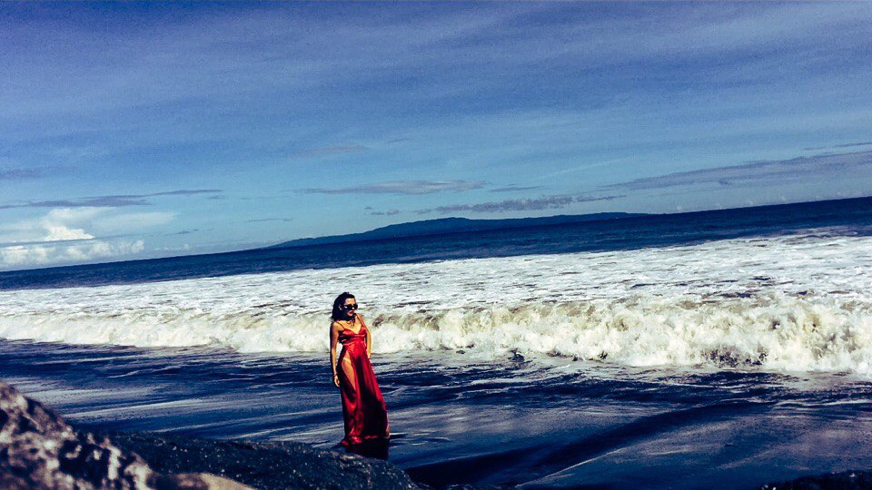
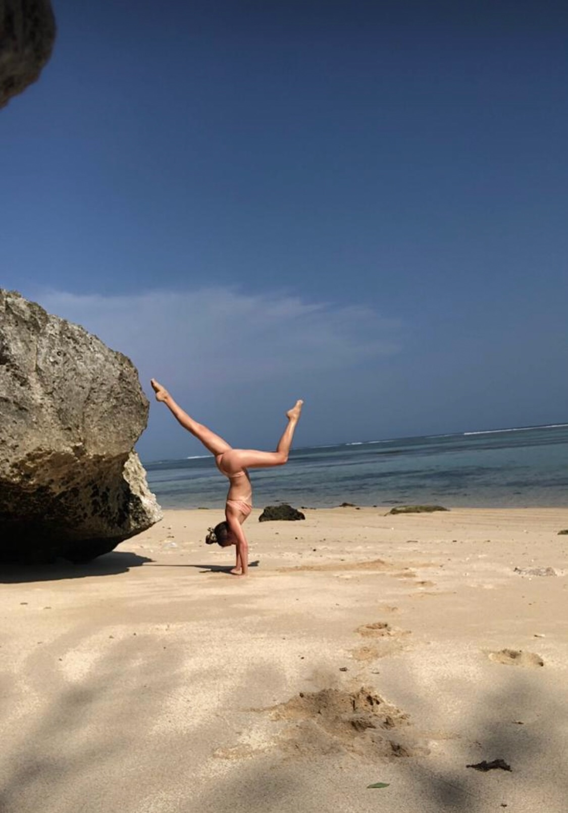

О ретрите
Ретрит ТОНИРИ — это не йога-тур с пением. Это авторская программа, которую я веду с одной целью: помочь вам встретиться с собственным голосом.
Не голосом певицы. Не голосом мамы. Не голосом сотрудницы. А голосом, который звучит до всех ролей. Природным, свободным, своим.
Вокальные практики и медитации
Йога голоса и работа с дыханием
Звукотерапия и пение мантр
Работа с чакрами через звук
Тишина и природа как пространство встречи с собой
Авторские техники освобождения зажимов

